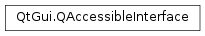

QAccessibleInterface¶
Inherited by: QAccessibleObject, QAccessibleWidget
Synopsis¶
Functions¶
- def
editableTextInterface() - def
tableCellInterface() - def
textInterface() - def
valueInterface()
Virtual functions¶
- def
backgroundColor() - def
child(index) - def
childAt(x, y) - def
childCount() - def
focusChild() - def
foregroundColor() - def
indexOfChild(arg__1) - def
interface_cast(arg__1) - def
isValid() - def
object() - def
parent() - def
rect() - def
relations([match=QAccessible.AllRelations]) - def
role() - def
setText(t, text) - def
state() - def
text(t) - def
virtual_hook(id, data) - def
window()
Detailed Description¶
The
PySide2.QtGui.QAccessibleInterfaceclass defines an interface that exposes information about accessible objects.This class is part of Accessibility for QWidget Applications.
Accessibility tools (also called AT Clients), such as screen readers or braille displays, require high-level information about accessible objects in an application. Accessible objects provide specialized input and output methods, making it possible for users to use accessibility tools with enabled applications (AT Servers).
Every element that the user needs to interact with or react to is an accessible object, and should provide this information. These are mainly visual objects, such as widgets and widget elements, but can also be content, such as sounds.
The AT client uses three basic concepts to acquire information about any accessible object in an application:
- Properties The client can read information about accessible objects. In some cases the client can also modify these properties; such as text in a line edit.
- Actions The client can invoke actions like pressing a button or .
- Relationships and Navigation The client can traverse from one accessible object to another, using the relationships between objects.
The
PySide2.QtGui.QAccessibleInterfacedefines the API for these three concepts.
Properties¶
The central property of an accessible objects is what
PySide2.QtGui.QAccessibleInterface.role()it has. Different objects can have the same role, e.g. both the “Add line” element in a scroll bar and theOKbutton in a dialog have the same role, “button”. The role implies what kind of interaction the user can perform with the user interface element.An object’s
PySide2.QtGui.QAccessibleInterface.state()property is a combination of different state flags and can describe both how the object’s state differs from a “normal” state, e.g. it might be unavailable, and also how it behaves, e.g. it might be selectable.The
PySide2.QtGui.QAccessibleInterface.text()property provides textual information about the object. An object usually has a name, but can provide extended information such as a description, help text, or information about any keyboard accelerators it provides. Some objects allow changing thePySide2.QtGui.QAccessibleInterface.text()property through thePySide2.QtGui.QAccessibleInterface.setText()function, but this information is in most cases read-only.The
PySide2.QtGui.QAccessibleInterface.rect()property provides information about the geometry of an accessible object. This information is usually only available for visual objects.
Interfaces¶
To enable the user to interact with an accessible object the object must implement
QAccessibleActionInterfacein addition toPySide2.QtGui.QAccessibleInterface. Objects that support selections can define actions to change the selection.There are several other interfaces that should be implemented as required.
PySide2.QtGui.QAccessibleTextInterfaceshould be used for bigger texts edits such as document views. This interface should not be implemented for labels/single line edits.For sliders, scrollbars and other numerical value selectors
PySide2.QtGui.QAccessibleValueInterfaceshould be implemented.Lists, tables and trees should implement
QAccessibleTableInterface.See also
PySide2.QtGui.QAccessibleQAccessibleActionInterfacePySide2.QtGui.QAccessibleTextInterfacePySide2.QtGui.QAccessibleValueInterfaceQAccessibleTableInterface
-
class
PySide2.QtGui.QAccessibleInterface¶
-
PySide2.QtGui.QAccessibleInterface.backgroundColor()¶ Return type: PySide2.QtGui.QColorReturns the accessible’s background color if applicable or an invalid
PySide2.QtGui.QColor.
-
PySide2.QtGui.QAccessibleInterface.child(index)¶ Parameters: index – PySide2.QtCore.intReturn type: PySide2.QtGui.QAccessibleInterfaceReturns the accessible child with index
index. 0-based index. The number of children of an object can be checked withPySide2.QtGui.QAccessibleInterface.childCount().Returns 0 when asking for an invalid child (e.g. when the child became invalid in the meantime).
-
PySide2.QtGui.QAccessibleInterface.childAt(x, y)¶ Parameters: - x –
PySide2.QtCore.int - y –
PySide2.QtCore.int
Return type: Returns the
PySide2.QtGui.QAccessibleInterfaceof a child that contains the screen coordinates (x,y). If there are no children at this position this function returns 0. The returned accessible must be a child, but not necessarily a direct child.This function is only relyable for visible objects (invisible object might not be laid out correctly).
All visual objects provide this information.
A default implementation is provided for objects inheriting
PySide2.QtGui.QAccessibleObject. This will iterate over all children. If the widget manages its children (e.g. a table) it will be more efficient to write a specialized implementation.- x –
-
PySide2.QtGui.QAccessibleInterface.childCount()¶ Return type: PySide2.QtCore.intReturns the number of children that belong to this object. A child can provide accessibility information on its own (e.g. a child widget), or be a sub-element of this accessible object.
All objects provide this information.
-
PySide2.QtGui.QAccessibleInterface.editableTextInterface()¶ Return type: PySide2.QtGui.QAccessibleEditableTextInterface
-
PySide2.QtGui.QAccessibleInterface.focusChild()¶ Return type: PySide2.QtGui.QAccessibleInterfaceReturns the object that has the keyboard focus.
The object returned can be any descendant, including itself.
-
PySide2.QtGui.QAccessibleInterface.foregroundColor()¶ Return type: PySide2.QtGui.QColorReturns the accessible’s foreground color if applicable or an invalid
PySide2.QtGui.QColor.
-
PySide2.QtGui.QAccessibleInterface.indexOfChild(arg__1)¶ Parameters: arg__1 – PySide2.QtGui.QAccessibleInterfaceReturn type: PySide2.QtCore.intReturns the 0-based index of the object
childin this object’s children list, or -1 ifchildis not a child of this object.All objects provide this information about their children.
-
PySide2.QtGui.QAccessibleInterface.interface_cast(arg__1)¶ Parameters: arg__1 – PySide2.QtGui.QAccessible.InterfaceTypeReturn type: voidReturns a specialized accessibility interface
typefrom the genericPySide2.QtGui.QAccessibleInterface.This function must be reimplemented when providing more information about a widget or object through the specialized interfaces. For example a line edit should implement the
PySide2.QtGui.QAccessibleTextInterface.Qt’s
PySide2.QtWidgets.QLineEditfor example has its accessibility support implemented in QAccessibleLineEdit.void *QAccessibleLineEdit::interface_cast(QAccessible::InterfaceType t) { if (t == QAccessible::TextInterface) return static_cast<QAccessibleTextInterface*>(this); return QAccessibleWidget::interface_cast(t); }
See also
QAccessible.InterfaceTypePySide2.QtGui.QAccessibleTextInterfacePySide2.QtGui.QAccessibleValueInterfaceQAccessibleActionInterfaceQAccessibleTableInterfacePySide2.QtGui.QAccessibleTableCellInterface
-
PySide2.QtGui.QAccessibleInterface.isValid()¶ Return type: PySide2.QtCore.boolReturns
trueif all the data necessary to use this interface implementation is valid (e.g. all pointers are non-null); otherwise returnsfalse.
-
PySide2.QtGui.QAccessibleInterface.object()¶ Return type: PySide2.QtCore.QObjectReturns a pointer to the
PySide2.QtCore.QObjectthis interface implementation provides information for.
-
PySide2.QtGui.QAccessibleInterface.parent()¶ Return type: PySide2.QtGui.QAccessibleInterfaceReturns the
PySide2.QtGui.QAccessibleInterfaceof the parent in the accessible object hierarchy.Returns 0 if no parent exists (e.g. for the top level application object).
-
PySide2.QtGui.QAccessibleInterface.rect()¶ Return type: PySide2.QtCore.QRectReturns the geometry of the object. The geometry is in screen coordinates.
This function is only reliable for visible objects (invisible objects might not be laid out correctly).
All visual objects provide this information.
-
PySide2.QtGui.QAccessibleInterface.relations([match=QAccessible.AllRelations])¶ Parameters: match – PySide2.QtGui.QAccessible.RelationReturn type: Returns the meaningful relations to other widgets. Usually this will not return parent/child relations, unless they are handled in a specific way such as in tree views. It will typically return the labelled-by and label relations.
It is possible to filter the relations by using
match. It should never return itself.
-
PySide2.QtGui.QAccessibleInterface.role()¶ Return type: PySide2.QtGui.QAccessible.RoleReturns the role of the object. The role of an object is usually static.
All accessible objects have a role.
-
PySide2.QtGui.QAccessibleInterface.setText(t, text)¶ Parameters: - t –
PySide2.QtGui.QAccessible.Text - text – unicode
Sets the text property
tof the object totext.Note that the text properties of most objects are read-only so calling this function might have no effect.
- t –
-
PySide2.QtGui.QAccessibleInterface.state()¶ Return type: PySide2.QtGui.QAccessible::StateReturns the current state of the object. The returned value is a combination of the flags in the QAccessible::StateFlag enumeration.
All accessible objects have a state.
-
PySide2.QtGui.QAccessibleInterface.tableCellInterface()¶ Return type: PySide2.QtGui.QAccessibleTableCellInterface
-
PySide2.QtGui.QAccessibleInterface.text(t)¶ Parameters: t – PySide2.QtGui.QAccessible.TextReturn type: unicode Returns the value of the text property
tof the object.The
QAccessible.Nameis a string used by clients to identify, find, or announce an accessible object for the user. All objects must have a name that is unique within their container. The name can be used differently by clients, so the name should both give a short description of the object and be unique.An accessible object’s
QAccessible.Descriptionprovides textual information about an object’s visual appearance. The description is primarily used to provide greater context for vision-impaired users, but is also used for context searching or other applications. Not all objects have a description. An “OK” button would not need a description, but a tool button that shows a picture of a smiley would.The
QAccessible.Valueof an accessible object represents visual information contained by the object, e.g. the text in a line edit. Usually, the value can be modified by the user. Not all objects have a value, e.g. static text labels don’t, and some objects have a state that already is the value, e.g. toggle buttons.The
QAccessible.Helptext provides information about the function and usage of an accessible object. Not all objects provide this information.The
QAccessible.Acceleratoris a keyboard shortcut that activates the object’s default action. A keyboard shortcut is the underlined character in the text of a menu, menu item or widget, and is either the character itself, or a combination of this character and a modifier key like Alt, Ctrl or Shift. Command controls like tool buttons also have shortcut keys and usually display them in their tooltip.All objects provide a string for
QAccessible.Name.
-
PySide2.QtGui.QAccessibleInterface.textInterface()¶ Return type: PySide2.QtGui.QAccessibleTextInterface
-
PySide2.QtGui.QAccessibleInterface.valueInterface()¶ Return type: PySide2.QtGui.QAccessibleValueInterface
-
PySide2.QtGui.QAccessibleInterface.virtual_hook(id, data)¶ Parameters: - id –
PySide2.QtCore.int - data –
void
Method to allow extending this class without breaking binary compatibility. The actual behavior and format of
datadepends onidargument which must be defined if the class is to be extended with another virtual function. Currently, this is unused.- id –
-
PySide2.QtGui.QAccessibleInterface.window()¶ Return type: PySide2.QtGui.QWindowReturns the window associated with the underlying object. For instance,
PySide2.QtWidgets.QAccessibleWidgetreimplements this and returns the windowHandle() of thePySide2.QtWidgets.QWidget.It is used on some platforms to be able to notify the AT client about state changes. The backend will traverse up all ancestors until it finds a window. (This means that at least one interface among the ancestors should return a valid
PySide2.QtGui.QWindowpointer).The default implementation returns 0.
© 2018 The Qt Company Ltd. Documentation contributions included herein are the copyrights of their respective owners. The documentation provided herein is licensed under the terms of the GNU Free Documentation License version 1.3 as published by the Free Software Foundation. Qt and respective logos are trademarks of The Qt Company Ltd. in Finland and/or other countries worldwide. All other trademarks are property of their respective owners.